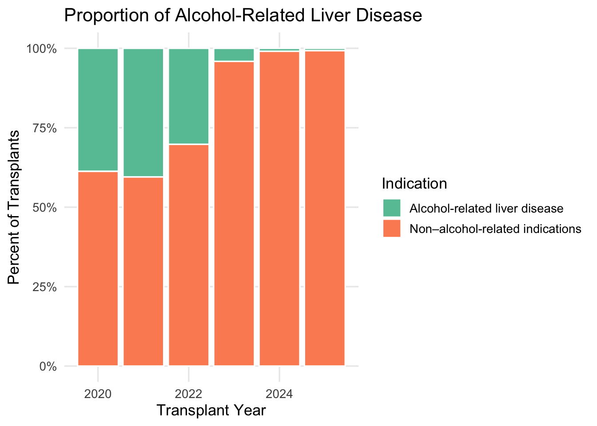

Alcohol-Related Liver Transplants: Donor Characteristics and
Prevalence
Proportion of Alcohol-Related Liver Disease
Proportion of adult liver transplants attributed to alcohol-related
versus non-alcohol-related diagnoses from 2020–2024, showing that
alcohol-related disease constitutes a substantial but variable portion
of transplant indications over time.
# Create a summary table showing the prevalence of alcohol-related liver disease.
ald_prevalence_overall <- liver_data %>%
count(ald_indication) %>%
mutate(
ald_label = if_else(
ald_indication == 1L,
"Alcohol-related liver disease",
"Non–alcohol-related indications"
),
pct = n / sum(n)
)
# Display the overall prevalence table.
kable(
ald_prevalence_overall %>%
select(ald_label, n, pct) %>%
mutate(pct = percent(pct, accuracy = 0.1)),
col.names = c("Indication", "Number of Transplants", "Percent of Transplants"),
caption = "Prevalence of Alcohol-Related Liver Disease Among Adult Liver Transplants (≥18, TX ≥2020)."
)
Prevalence of Alcohol-Related Liver Disease Among Adult Liver
Transplants (≥18, TX ≥2020).
| Non–alcohol-related indications |
38933 |
79.5% |
| Alcohol-related liver disease |
10032 |
20.5% |
# Summarize the prevalence of alcohol-related liver disease by transplant year.
ald_prevalence_year <- liver_data %>%
count(tx_year, ald_indication) %>%
group_by(tx_year) %>%
mutate(
pct = n / sum(n),
ald_label = if_else(
ald_indication == 1L,
"Alcohol-related liver disease",
"Non–alcohol-related indications"
)
) %>%
ungroup()
# Display the year-specific prevalence table.
kable(
ald_prevalence_year %>%
select(tx_year, ald_label, n, pct) %>%
mutate(pct = percent(pct, accuracy = 0.1)),
col.names = c("Transplant Year", "Indication", "Number of Transplants", "Percent within Year"),
caption = "Prevalence of Alcohol-Related Liver Disease by Transplant Year (Adults ≥18, TX ≥2020)."
)
Prevalence of Alcohol-Related Liver Disease by Transplant Year
(Adults ≥18, TX ≥2020).
| 2020 |
Non–alcohol-related indications |
5153 |
61.3% |
| 2020 |
Alcohol-related liver disease |
3251 |
38.7% |
| 2021 |
Non–alcohol-related indications |
5200 |
59.5% |
| 2021 |
Alcohol-related liver disease |
3534 |
40.5% |
| 2022 |
Non–alcohol-related indications |
6283 |
69.8% |
| 2022 |
Alcohol-related liver disease |
2718 |
30.2% |
| 2023 |
Non–alcohol-related indications |
9708 |
95.9% |
| 2023 |
Alcohol-related liver disease |
416 |
4.1% |
| 2024 |
Non–alcohol-related indications |
10785 |
99.1% |
| 2024 |
Alcohol-related liver disease |
100 |
0.9% |
| 2025 |
Non–alcohol-related indications |
1804 |
99.3% |
| 2025 |
Alcohol-related liver disease |
13 |
0.7% |
# Create a stacked bar plot showing the proportion of ALD vs non-ALD each year.
ggplot(ald_prevalence_year, aes(x = tx_year, y = pct, fill = ald_label)) +
geom_col(color = "white") +
scale_y_continuous(labels = percent_format(accuracy = 1)) +
scale_fill_brewer(palette = "Set2") +
labs(
title = "Proportion of Alcohol-Related Liver Disease",
x = "Transplant Year",
y = "Percent of Transplants",
fill = "Indication"
) +
theme_minimal(base_size = 13) +
theme(
panel.grid.minor = element_blank()
)

Donar Age by Alcohol-Related Liver Disease Etiology
Donor age distributions stratified by alcohol-related etiology,
illustrating visibly older donors among recipients transplanted for
alcohol-related cirrhosis compared with acute alcohol-related
hepatitis.
# Restrict to alcohol-related liver disease transplant recipients.
liver_ald <- liver_data %>%
filter(alcohol_subtype != "Other")
# Create a clean donor type factor for readability.
liver_ald <- liver_ald %>%
mutate(
don_ty_factor = case_when(
don_ty == "C" ~ "Deceased Donor",
don_ty == "L" ~ "Living Donor",
TRUE ~ "Other / Unknown"
),
don_ty_factor = factor(
don_ty_factor,
levels = c("Deceased Donor", "Living Donor", "Other / Unknown")
)
)
# Check the distribution of alcohol subtypes in this ALD cohort.
liver_ald %>%
count(alcohol_subtype) %>%
kable(
col.names = c("Alcohol-related Diagnosis", "Number of Transplants"),
caption = "Count of Alcohol-Related Liver Transplants by Etiology (Adults ≥18, TX ≥2020)."
)
Count of Alcohol-Related Liver Transplants by Etiology (Adults
≥18, TX ≥2020).
| Acute Alcohol-related Hepatitis |
511 |
| Alcohol-related Cirrhosis |
9521 |
# Summarize donor characteristics by alcohol-related etiology.
donor_by_subtype <- liver_ald %>%
group_by(alcohol_subtype) %>%
summarise(
n_transplants = n(),
median_donor_age = median(don_age, na.rm = TRUE),
iqr_donor_age = IQR(don_age, na.rm = TRUE),
mean_donor_age = mean(don_age, na.rm = TRUE),
sd_donor_age = sd(don_age, na.rm = TRUE),
n_deceased_donors = sum(don_ty_factor == "Deceased Donor", na.rm = TRUE),
n_living_donors = sum(don_ty_factor == "Living Donor", na.rm = TRUE),
pct_deceased = 100 * n_deceased_donors / n_transplants,
pct_living = 100 * n_living_donors / n_transplants,
.groups = "drop"
)
# Display the donor summary table.
kable(
donor_by_subtype,
digits = 1,
caption = "Donor Age and Donor Type by Alcohol-Related Liver Disease Etiology (Adults ≥18, TX ≥2020)."
)
Donor Age and Donor Type by Alcohol-Related Liver Disease
Etiology (Adults ≥18, TX ≥2020).
| Acute Alcohol-related Hepatitis |
511 |
37 |
22.0 |
38.8 |
13.4 |
510 |
1 |
99.8 |
0.2 |
| Alcohol-related Cirrhosis |
9521 |
41 |
23.2 |
41.7 |
14.9 |
9189 |
332 |
96.5 |
3.5 |
# Create a boxplot showing the distribution of donor age by alcohol-related etiology.
ggplot(
liver_ald,
aes(x = alcohol_subtype, y = don_age, fill = alcohol_subtype)
) +
geom_boxplot(alpha = 0.8, outlier_alpha = 0.6) +
labs(
title = "Donor Age by Alcohol-Related Liver Disease Etiology",
x = "Alcohol-Related Etiology",
y = "Donor Age at Organ Recovery (years)",
fill = "Etiology"
) +
theme_minimal(base_size = 13) +
theme(
legend.position = "none",
axis.text.x = element_text(angle = 20, hjust = 1)
)
# Perform a Wilcoxon rank-sum test comparing donor age by alcohol-related etiology.
age_test_data <- liver_ald %>%
filter(alcohol_subtype %in% c("Alcohol-related Cirrhosis",
"Acute Alcohol-related Hepatitis")) %>%
filter(!is.na(don_age))
wilcox_test_result <- wilcox.test(
don_age ~ alcohol_subtype,
data = age_test_data
)
# Print the Wilcoxon test result to the console.
wilcox_test_result
##
## Wilcoxon rank sum test with continuity correction
##
## data: don_age by alcohol_subtype
## W = 2167902, p-value = 3.359e-05
## alternative hypothesis: true location shift is not equal to 0
# Create a 2x2 table of alcohol-related etiology by donor type (living vs deceased).
donor_type_tab <- liver_ald %>%
filter(
alcohol_subtype %in% c("Alcohol-related Cirrhosis",
"Acute Alcohol-related Hepatitis"),
don_ty_factor %in% c("Deceased Donor", "Living Donor")
) %>%
count(alcohol_subtype, don_ty_factor) %>%
pivot_wider(
names_from = don_ty_factor,
values_from = n,
values_fill = 0
)
# Print the contingency table.
kable(
donor_type_tab,
caption = "Cross-Tabulation of Alcohol-Related Etiology by Donor Type."
)
Cross-Tabulation of Alcohol-Related Etiology by Donor
Type.
| Acute Alcohol-related Hepatitis |
510 |
1 |
| Alcohol-related Cirrhosis |
9189 |
332 |
# Convert to a matrix for chi-squared or Fisher's exact test.
donor_type_matrix <- donor_type_tab %>%
select(-alcohol_subtype) %>%
as.matrix()
# Perform a chi-squared test; if counts are small, Fisher's exact test can be considered instead.
chisq_test_result <- stats::chisq.test(donor_type_matrix)
# Print the chi-squared test result.
chisq_test_result
##
## Pearson's Chi-squared test with Yates' continuity correction
##
## data: donor_type_matrix
## X-squared = 15.361, df = 1, p-value = 8.88e-05